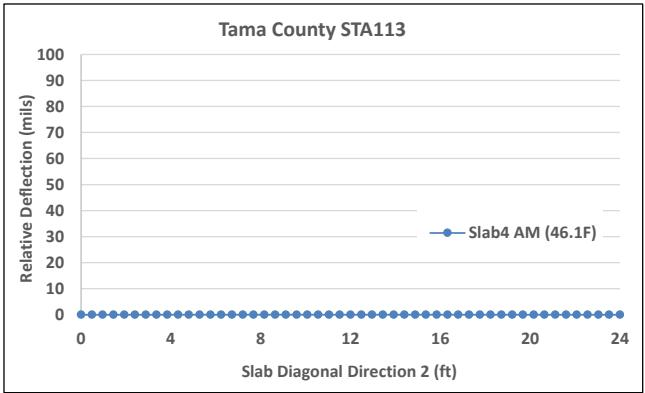
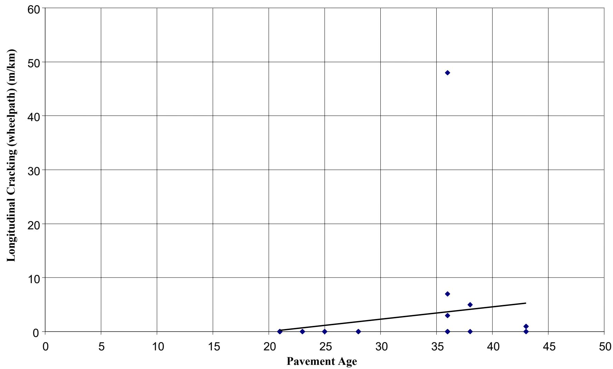
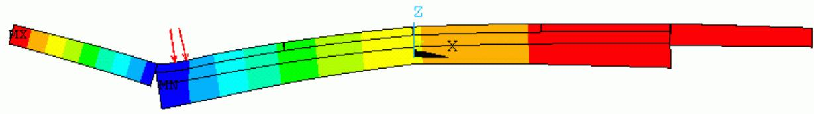
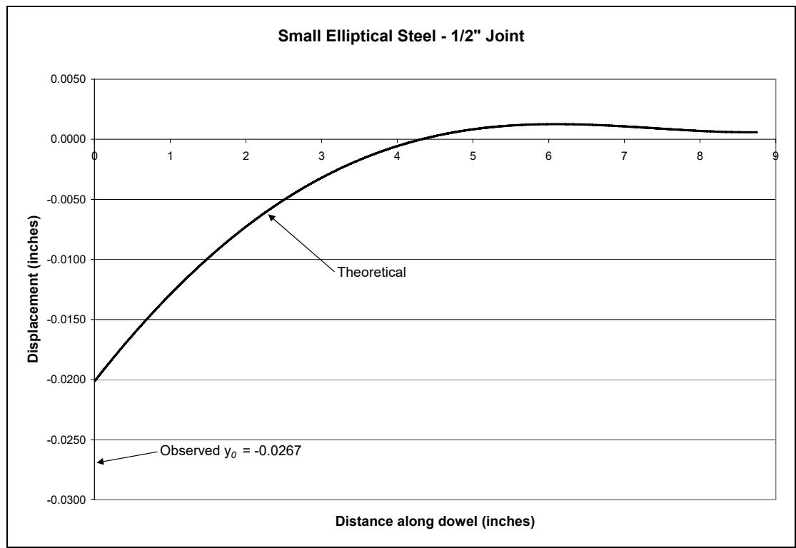
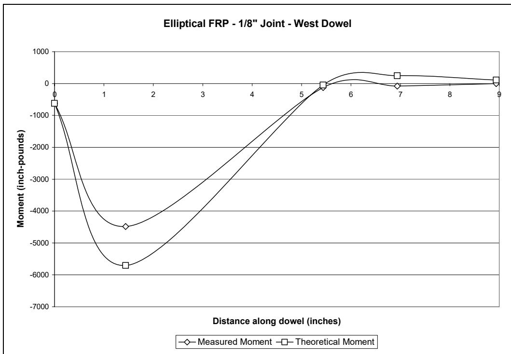
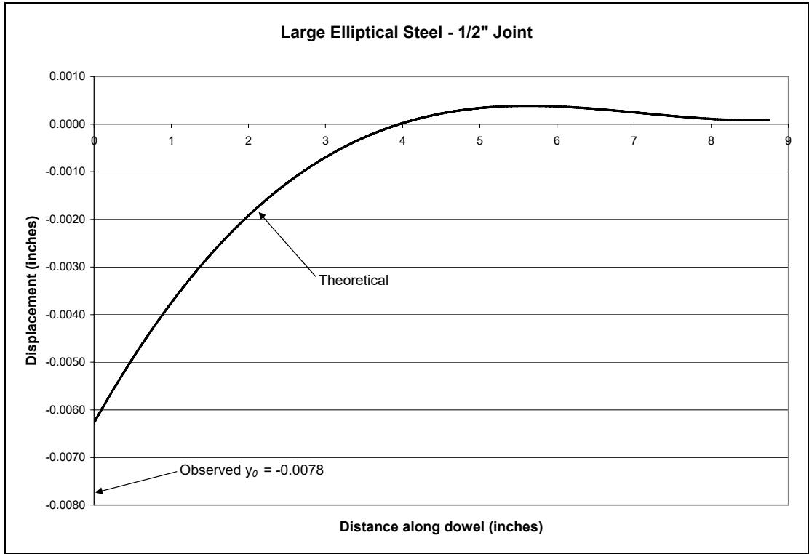
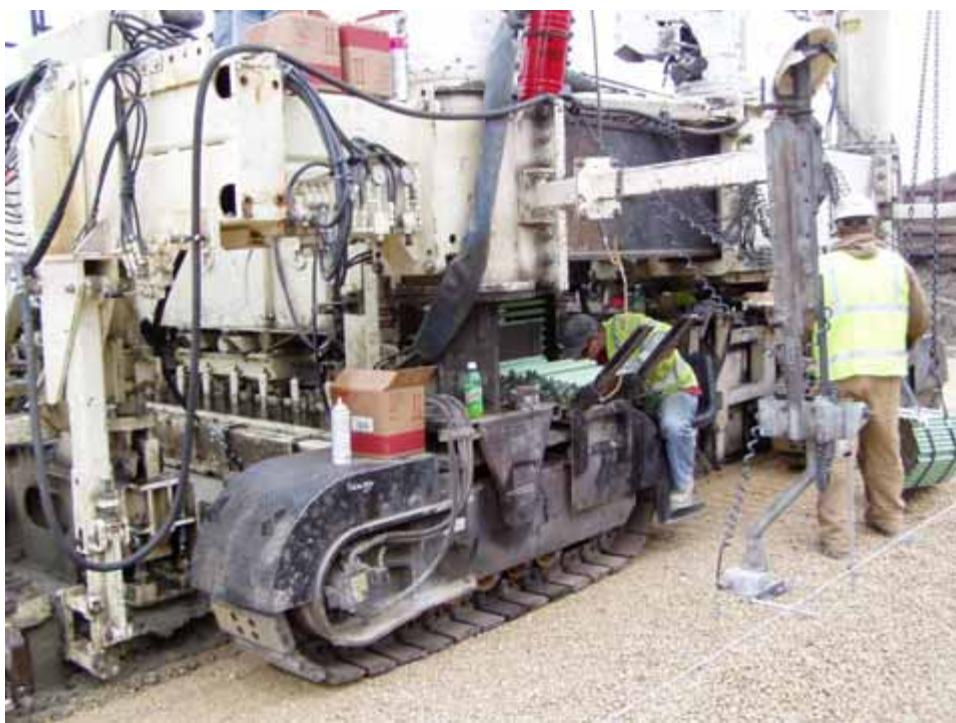
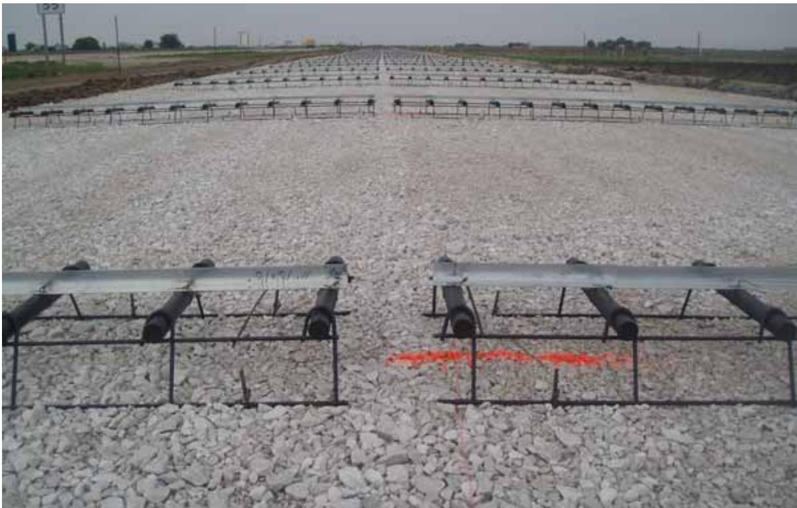
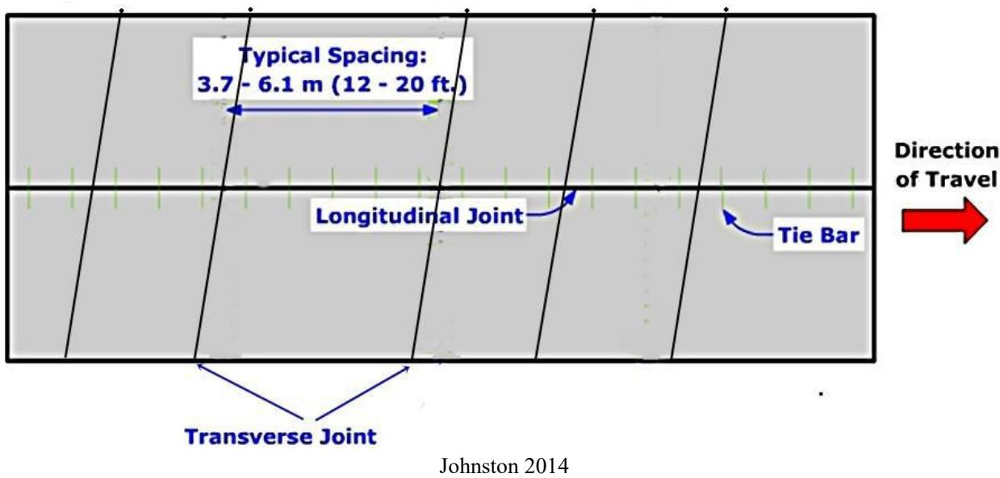

Dowel Bar
A load transfer device placed at transverse joints in jointed concrete pavement to transfer load from one slab to an adjacent slab. Typically smooth, round, and corrosion-resistant (commonly epoxy-coated steel). Alternative materials include glass fiber-reinforced polymer (GFRP/FRP) and stainless steel; alternative shapes include elliptical and I-beam profiles. [1]
The category comprises material variants (steel, stainless steel, GFRP) and geometric profiles (round, elliptical, I-beam), which differ primarily in corrosion resistance, flexural rigidity, and resulting bearing stress distribution. [1]–[3] These physical forms are analyzed through specific mechanical phenomena like Dowel Oblonging and bearing stress, while their performance is quantified using analytical models such as the Friberg equations or empirical parameters like the Modulus of Dowel Support. [1] Testing methodologies including AASHTO T253 and the Iosipescu Shear Test provide the standardized data necessary to evaluate these distinct designs under load.
Dowel bars are smooth, round steel rods inserted across concrete pavement joints to facilitate load transfer between adjacent slabs while permitting horizontal movement. Their primary function is to transmit part of an applied wheel load from a loaded slab to the adjacent unloaded slab, which significantly reduces stresses and deflections resulting from joint loading [1]. By minimizing faulting and pumping, these devices help maintain pavement performance, with larger diameter steel bars generally providing better load transfer capabilities [6].
Sources (31)
Sub-concepts (8)
Overview and Primary Functions
The use of dowel bars is a necessary design element for achieving zero-maintenance jointed plain concrete pavements that can serve up to 25 years without distress [4]. This concept requires short joint spacing, adequate subdrainage, increased slab thickness, and identical transverse joints across traffic lanes [4]. By transferring wheel loads across joints, dowel bars reduce joint faulting and differential settlement while allowing thermal expansion/contraction without binding.
Furthermore, dowel bars restrict pavement deflection at joints, resulting in pavements with dowels exhibiting less curling and warping deflection than those without them, though the restraints they provide can simultaneously induce higher internal stresses [5]. Consequently, the presence of dowel bars can make slab length less of a determining factor in overall curling and warping behavior [5].

Morning relative deflection of Slab 4 at Site 6: longitudinal (top left), transverse (top right), diagonal 1 (bottom left), and diagonal 2 (bottom right) [5]Failure Mechanisms and Degradation Factors
Looseness around dowel bars significantly impairs their ability to transfer load, with subgrade stiffness having a notable effect on the resulting dowel bar response [6]. This degradation can manifest as oblonging, where stress concentrations crush concrete at the joint face to create voids around the dowel, or through bearing stress failure, in which high contact stresses at the joint face damage surrounding concrete. Furthermore, mid-depth voids approximately 4 inches in diameter can form around dowel bars at transverse joints due to significant joint deterioration, a type of localized damage documented during field inspections of deteriorated pavements [7]. Additionally, corrosion can bind/lock joints, preventing thermal movement and causing parallel cracking.
The alignment and placement of dowel bars are critical to pavement integrity; while dowel bars significantly reduce damage associated with longitudinal cracking, they may encourage crack propagation once a crack has already initiated within the slab [8]. Misaligned dowel bars are identified as a contributing factor to unexpected premature longitudinal cracking, alongside shallow saw cut depths and malfunctioning paver vibrators [8]. Specifically, non-uniform vertical misalignment of dowel bars can cause joint lock-up and premature pavement failure, whereas uniform misalignment does not significantly impede horizontal joint movements [6]. Misalignment can also initiate pavement degradation by causing cracking that allows excessive moisture intake into the concrete slab, which subsequently leads to freeze-thaw spalling; therefore, effective subbase drainage is critical because water must be rapidly removed from both the surface and the subbase layer [4].

Longitudinal cracking in wheelpath vs. pavement age [4]Thermal and mechanical stresses further influence slab behavior. Internal tensile stresses induced by restraints from dowel bars and base friction can be magnified under repetitive vehicle loading, potentially leading to transverse cracking [9]. To manage these effects, dowel bars help minimize upward curvature locked into the slab during construction by mitigating thermal gradients present as concrete transitions from fluid to solid states [10], and any built-in upward curling induced during the hardening period may be recovered over time due to creep behaviors resulting from slab weight and dowel bar constraints [5]. In pavement analysis, an effective temperature gradient of -10°F is utilized to simultaneously simulate the combined effects of curling and warping on the structural behavior of the slabs [11]. Finally, fiber reinforcement in thin overlays can reduce curling and warping stresses caused by moisture and temperature gradients, which may improve fatigue life and decrease the likelihood of joint misalignment [12].
 Stresses exerted due to PCC curling and warping: tensile stress exerted at the top of the PCC slab with upward curvature (top), and tensile stress exerted at the bottom of the PCC slab with downward curvature (bottom) [9]
Stresses exerted due to PCC curling and warping: tensile stress exerted at the top of the PCC slab with upward curvature (top), and tensile stress exerted at the bottom of the PCC slab with downward curvature (bottom) [9]
Moisture absorption by FRP dowels may cause expansion, increasing stress in the surrounding concrete and potentially leading to cracks or oblonging of the dowel hole. [1]
This moisture-related dimensional change represents a distinct degradation mechanism not present in steel dowels. [1]
Dowel Bar Diameter Benefits
Large-diameter dowel bars are identified as a promising design feature that can significantly extend pavement service life [13]. The dominating forces acting on dowel rods under traffic loading are moments and vertical shear forces [6], with key design factors including diameter, shape, spacing, material properties, Modulus of Dowel Support (K₀), Load Transfer Efficiency (LTE), and bearing stress at the joint face (σ₀). For circular dowels, the allowable bearing stress is calculated using a formula developed by ACI Committee 325 that provides an approximate factor of safety of three against peripheral cracking [1]. Additionally, the shear deflection component in relative joint deflection calculations utilizes a form factor of 10/9 specifically for solid circular sections [1]. Research from Europe indicates that shorter dowel bars may achieve performance comparable to longer ones, and smaller diameter dowels spaced more closely, such as at 10-inch intervals, can also produce good pavement performance [13]. Conversely, dowel bars located outside the wheel paths have little to no effect on critical pavement response and can be omitted without adversely affecting overall pavement performance [13].
 Relative deflection between adjacent pavement slabs [1]
Relative deflection between adjacent pavement slabs [1]
Tested uniform dowel bar spacing configurations include intervals of 12 inches, 15 inches, and 18 inches center to center [14], though placement can be concentrated primarily in the wheel paths using a configuration of four bars each at 12-inch spacing [14]. Design parameters like joint spacing and dowel diameter are frequently selected based on regional construction practices, such as specific standard dimensions commonly utilized in Iowa [11]. Dowel bar diameter significantly impacts curling and warping indicators; larger diameters generally lower these behaviors across LTPP sections despite potential confounding factors like slab thickness [10].
 Dowel bar effects on county roads and city streets: (a) curvature IRI, (b) deflection, (c) deflection ratio, (d) degree of curvature (no dowel bar [4 sites, 56 data points], 1.5 in. dowel bar [2 sites, 30 data points]) [10]
Dowel bar effects on county roads and city streets: (a) curvature IRI, (b) deflection, (c) deflection ratio, (d) degree of curvature (no dowel bar [4 sites, 56 data points], 1.5 in. dowel bar [2 sites, 30 data points]) [10]
Load Transfer Efficiency is calculated using deflection measurements from Falling Weight Deflectometer testing, where the load plate is positioned at the edge of one slab adjacent to the joint [12]. In finite element modeling of composite pavements, tie bars are represented using beam elements connected together to form a single bar, allowing for the collection of bending stresses, elastic strains, shear forces, and moments along their length [15]. Parametric studies on composite pavements indicate that while #4 rebars spaced at 30 inches on center are insufficient for load transfer without aggregate interlock, using larger #8 rebars spaced at 30 inches on center can successfully prevent complete separation between widening units and the composite section [15]. thin whitetopping design procedures for rehabilitation projects may incorporate stress correction factors to account for partial bonding phenomena between concrete and asphalt layers, allowing for more economical pavement construction [15]. In widened concrete panels, increasing pavement thickness from 9 inches to 10 inches reduces longitudinal cracking by 25%, whereas increasing the width-to-thickness ratio leads to a 45% increase in crack length for 14-foot panels [8].

Partial separation at widening unit–composite section interface (cross-section view—exaggerated scale) [15]Using Tabatabaie’s load distribution model (18 kip axle load, 9 kip wheel load), the maximum dowel load under extreme conditions was ~7,000 lb — all six dowel types perform adequately under normal conditions. [2]
Under extreme loading conditions where a wheel load is applied directly over a dowel with 18-inch spacing, the maximum calculated dowel load reaches approximately 7,000 pounds. [2]
For mechanistic analysis models used to evaluate load transfer efficiency, the modulus of subgrade reaction is a required input alongside slab thickness and the radius of the loaded area [1].
The form factor used for shear deflection calculations is currently established as 10/9 for solid circular sections. [1]
Dowel Bar Types and Material Properties
For comparison, standard round steel dowels have a diameter of 1.5 inches and a cross-sectional area of 1.767 square inches [14].
Dowel bars are typically manufactured with a circular cross-section to facilitate rotation within the concrete joint [1]. In contrast, elliptical dowels utilize an elongated profile that restricts vertical movement while maintaining load transfer capabilities [1]. This geometric variation addresses issues such as oblonging and void formation caused by stress concentrations at the joint face [1].
Regarding different steel types, stainless steel dowels exhibit smaller relative deflections compared to similarly sized epoxy-coated steel dowels because the soft epoxy coating allows for more initial displacement at lower loads [2]. This difference in deflection occurs despite steel having slightly greater flexural rigidity than stainless steel [2].

Theoretical displacement of small elliptical steel dowel, 1/2-inch joint [2]Fiber-Reinforced Polymer (FRP) dowels serve as a non-corrosive substitute for traditional steel dowel bars in concrete pavements exposed to deicing salts or marine environments [1]. Research indicates that using FRP reduces the likelihood of corrosion due to moisture compared to steel alternatives [1]. Consequently, FRP dowels are recognized as a corrosion-resistant alternative type of Dowel Bar [3].
| Dowel Type | Allowable Stress (psi) | Load Range When Exceeded (lbs) | |—|—|—| | Round Steel | 4,583 | 6,000–8,500 | | Large Elliptical Steel | 3,666 | 7,000–8,000 | | Small Elliptical Steel | 4,290 | 6,500–8,500 | | Stainless Steel | 4,583 | 6,000–8,000 | | Round GFRP | 3,895 | 6,500–8,000 | | Elliptical GFRP | 3,208 | 5,000–6,000 |
GFRP dowels produce lower K₀ values than epoxy-coated or stainless steel dowels, partly because GFRP is a softer material that experiences localized deformation at the joint edge under high stresses. [2]

Theoretical and measured moments, elliptical GFRP specimen, west dowel, 1/8-inch joint [2]Stainless steel dowels limit overall displacement better than large elliptical steel dowels, but their higher flexural rigidity leads to greater bearing stresses between the dowel and concrete. [2]

Theoretical displacement of large elliptical steel dowel, 1/2-inch joint [2]Dowel bar specimens undergo the Iosipescu Shear Test to verify compliance with ASTM D5379 standards for assessing material properties under pure shear conditions [1]. This laboratory test method provides an adequate procedure for evaluating the shear properties of a pavement dowel and concrete system [1]. Research indicates that modified versions of this elemental testing approach yield consistent results comparable to full-scale slab evaluations [1].
Construction Methods and Installation Techniques
Adequate concrete consolidation around the dowel bars is critical for good joint performance both immediately after construction and over time [13]. In mainline jointed concrete pavement construction, transverse joints are typically spaced at 20-foot intervals and cut to a depth of approximately 2 inches using early-entry saws [16], while the center longitudinal joint is typically cut to a width of 1/8 inch and a depth of approximately 3.5 inches using conventional water-cooled saws [16]. Standard construction specifications may mandate that transverse and longitudinal joints be cut to specific depths without the application of joint cleaning or sealants [17], though alternative construction specifications may require cleaning and sealing sawcut joints with hot asphalt sealant, contrasting with protocols that mandate no joint cleaning or sealants [18]. Construction occurring in the latter half of the day reduces exposure to solar radiation, resulting in lower built-in curling that can subsequently recover through creep behavior driven by slab weight and dowel bar constraints [5]. In pavements utilizing a ternary mixture of portland cement, fly ash, and slag, dowel bars are installed in jointed concrete pavement with straight joints at 20-foot panel intervals [19], and dowel bars are also utilized in jointed concrete pavements with transverse tined surfaces and non-skewed joints [19]. Conversely, roller-compacted concrete (RCC) pavements are constructed without jointing or reinforcement for load transfer, eliminating the need for dowel bars entirely; this absence of dowels and joints allows RCC to be easily rolled and finished, resulting in significant economic savings compared to conventional jointed concrete pavement [20].
Dowel bars are installed at concrete pavement joints to facilitate load transfer between adjacent slabs [1]. However, inadequate clearance or misalignment during installation can lead to dowel oblonging, a distress where the bar deforms the surrounding concrete due to stress concentrations at the contact points [1]. This deformation creates voids that inhibit the dowel’s ability to effectively transfer loads across the joint [1].
Automated dowel bar inserters (DBIs) are utilized by slipform pavers to place smooth, round dowels at precise longitudinal intervals along transverse joints during construction [17]. In a 9.5-inch JPCP construction, automated dowel bar inserters placed 18-inch long, 1.25-inch diameter smooth dowels at approximately 30-inch intervals along transverse joints spaced roughly every 15 feet [18]. Dowel baskets are positioned prior to the paver at transverse joints, holding smooth dowels that can be specified as 18.1 inches in length, 1.5 inches in diameter, and spaced at approximately 11.8-inch intervals [18]. However, dowel baskets containing bars only in the wheel paths create a weak section in the middle where no dowels are present, which can lead to basket instability during paving [21]. Variable thickness asphalt separation layers complicate dowel basket anchoring, requiring anchors with sufficient force to penetrate concrete or reduced shot force for thicker asphalt sections [21], and leaving shipping wires intact on dowel baskets improves structural stability during concrete placement compared to clipping them as specified in some state DOT protocols [21]. For specific configurations, the center of the first bar in wheel path configurations is located six inches from the centerline for the inside wheel path [14], and test sections are designed to consist of 20 transverse joints for each specific combination of dowel shape and spacing [14].

Paver and dowel bar inserter operations [17]Various materials and methods are used for dowel installation and joint forming. Self-consolidating flowable concrete (SFSCC) exhibits set time, heat evolution, and strength development comparable to conventional pavement concrete while maintaining strong bonding with simulated dowel bars [22]. Joint-forming devices utilizing galvanized L-shaped metal pieces can be installed on the subgrade base material below dowel baskets to induce transverse cracks, with pins driven behind the device’s ‘L’ at 610 mm (2-foot) centers to prevent overturning during concrete placement [23]. Alternative joint-forming devices made of plastic have been developed and marketed in Australia, offering a potential method for forming transverse joints within fresh concrete without relying on traditional sawing [23]. Dowel chairs can be constructed from single sheets of metal folded into specific shapes, incorporating features such as flanged hubs struck outwardly to guide the dowels and cooperating tongues that provide a sliding fit within intermediate recesses [23]; they may also be designed with air chambers and spectured walls, utilizing foot flanges that form a 90-degree angle with the walls and retaining spikes to secure the assembly within the pavement structure [23]. Dowel bar repair (DBR) involves cutting and cleaning slots across a crack or joint, inserting the dowel bars, and patching the slots to restore load transfer [13], though undercutting pavement joint repairs initially reduces the forces experienced by dowel bars, an effectiveness that diminishes over time as forces stabilize to levels similar to non-undercut repairs [6].

Typical cross-section of metal angles placed over dowels [23]Monitoring, Instrumentation, and Detection
Nondestructive testing methods can be applied to inspect for defects in the dowel bar placement within the slab as a distinct component level investigation, a capability that allows for condition assessment of the dowel system without impairing the usefulness of the surrounding concrete materials [24]. For instance, ground penetrating radar (GPR) surveys can detect responses originating from dowel chairs within the pavement structure, where these radar anomalies are observable across different frequency bands, such as 900 MHz and 400 MHz data, providing a means to locate dowel placement nondestructively [24]. Additionally, the MIT-SCAN-2 device provides a method for obtaining efficient and cost-effective in situ dowel position information to detect misalignment during construction [13], and specifically, the MIT Scan-2 device utilizes magnetic pulses to measure the depth of dowel bars, offering a method for evaluating dowel placement accuracy in concrete roads [25]. Furthermore, the presence of dowel bars is a documented feature in pavement condition databases used to evaluate concrete overlays, often recorded alongside integral widening and truck traffic data [26].
Regarding direct monitoring, strain gages can be embedded directly beneath dowel bars at joints to monitor stress concentrations and load transfer efficiency during construction [9]. Strain measurement instrumentation can also be directly attached to existing dowel bars using short steel rebar segments secured with nylon tie-wraps, positioning vibrating wire strain gages at the mid-height of the pavement thickness [27]. In these setups, instrumentation cables for monitoring dowel bar performance are routed through dowel baskets and protected by burial in one-inch deep trenches during concrete placement [27]. Sensor installation near dowels often utilizes wooden bars fixed with screw holes for flexible mounting, though oblong bar shapes may provide greater stability during concrete spreading than cylindrical ones [9]. Separately, laser scanning technology enables real-time determination of pavement thickness by comparing surface scans taken before paving against those taken after, allowing for accurate calculation of thickness variance and identification of areas falling below tolerance limits [25]; however, high-resolution laser scanners are unable to detect transparent or highly reflective objects, such as chrome bars, which limits their effectiveness in capturing point data for certain metallic surfaces [25]. To process this information, ordinary kriging statistical analysis can be applied to point cloud data from pavement scans to predict z-coordinates at new locations using linear combinations of existing observations weighted by theoretical variograms [25].
Surface Roughness and Noise Mitigation
Pavements without dowel bars exhibit higher rates of roughness growth compared to those equipped with dowels, as non-dowelled pavements show increased curvature IRI and deflection metrics over time [10]. One such phenomenon is dowel bar ripple, a surface roughness issue caused by the downward pressure of paving machines on dowel baskets, which compresses into the foundation and rebounds when relieved to create protruding bumps near joints [28]. This effect is most pronounced in outside wheel tracks where ripple amplitudes are larger than those in inside wheel tracks [28], and it contributes directly to increased Profilograph Index (PI) values by creating upward scallops at joint locations that exacerbate downward scallops on either side [28]. Specifically, individual ripples with heights of 0.050 and 0.067 inches penalized the overall PI for a one-tenth of a mile lot by 0.50 and 0.67 inches/mile, respectively [28]. To mitigate this, the application of an auto-float after the initial float pan significantly reduces dowel bar ripple by smoothing out the bumps caused by dowel basket rebound; in field testing, the use of an auto-float reduced the International Roughness Index (IRI) by 11 inches/mile and the PI by 6.5 inches/mile over a measured section [28].
 Simulated profilograph trace, passing lane outside trace [28]
Simulated profilograph trace, passing lane outside trace [28]
Other factors influencing smoothness include real-time smoothness (RTS) profiles, which often record higher IRI values—approximately 100 in/mi compared to hardened profiles of 65 in/mi—due to sensor vibration from the dowel-bar inserter and short wavelength irregularities that are later removed by finishing equipment [29]. Additionally, stringless control systems can induce regular IRI fluctuations that correlate with the spacing of robotic total stations, causing elevation discrepancies between the paver sides based on their distance from the control units [29]. Regarding noise management, pavements are categorized into psychoacoustic zones based on On-Board Sensor Instrument (OBSI) noise levels; Zone 2 represents a ‘Quality’ range of roughly 99/100 to 104/105 dBA where cost-effective solutions for noise, friction, and smoothness can be balanced [30]. Dowel bar retrofitting is utilized as a joint repair method to eliminate noise issues in pavements located within specific psychoacoustic zones, often combined with grinding to restore friction and smoothness [31]. Specifically, dowel bar retrofitting combined with joint repairs is a recommended strategy for eliminating existing pavements from the high-noise ‘Avoid’ Zone, which captures values higher than 104/105 dBA OBSI [30]. When addressing these issues, the elimination of high-noise pavements should consider frequency issues beyond just dBA levels, such as removing specific tonal characteristics like ‘the whine’ from the pavement surface [30]. Furthermore, diamond grinding can be applied to concrete pavements containing dowel bars to reduce noise source levels by up to 9 dBA relative to transversely tined surfaces while maintaining acoustic durability [31].
Specialized Pavement Geometries and Joint Effects
PennDOT policy mandates perpendicular joints for limited-access, four-lane concrete highways to reduce joint faulting, improve ride smoothness, and lower maintenance requirements [1]. In jointed concrete pavements constructed with portland cement and 35% slag at nominal depths of 14 inches, dowel bars are specified [19]. While skewed joints create load cantilevers that impart excessive tensile strain on slabs, leading to more severe cracking compared to rectangular joint designs [8], skewed joints with dowel bars can improve plain concrete pavement performance by reducing joint deflection and stress, potentially extending service life up to 2.5 times longer than non-dowelled skewed joints before maintenance is required [10]. Furthermore, when constructing a doweled pavement adjacent to one without dowels, or when changing transverse joint spacing patterns between sections, longitudinal isolation joints are required to prevent cracking in widened slabs caused by mismatched joint spacings [8].

Top view of skewed joint [8]Regarding overlay applications, concrete-on-concrete unbonded overlays with a geotextile separation layer exhibit significantly lower load transfer efficiency compared to bonded concrete-on-asphalt overlays, suggesting that unbonded systems may require dowel bars or increased thickness to achieve equivalent performance [12]. In these unbonded concrete overlays, dowel bars can be omitted between wheel paths to reduce construction complexity while maintaining load transfer within the primary traffic lanes [21]. However, in concrete overlays too thin to accommodate dowel bars or tie bars, synthetic macrofibers can enhance aggregate interlock across joints, thereby improving load transfer efficiency and reducing the potential for faulting [12]. Additionally, shoulder pavements are tied to the mainline structure using #4 reinforcement bars [16].
Bearing Stress Distribution
Round dowels concentrate bearing stress at the top and bottom of the bar at the joint face.
Dowel bars function by transmitting wheel loads from a loaded slab across a joint to an adjacent unloaded slab [1]. This load transfer occurs through bearing against the surrounding concrete, which generates localized compressive stresses known as dowel bearing stress [1]. The magnitude of these stresses is critical to joint performance and is typically greatest at the face of the joint [1].
Load Transfer Efficiency Degradation
Repetitive loading creates voids above or beneath the dowel at the joint face, causing a 5 to 10 percent reduction in load transfer efficiency [1].
A design load transfer of 45 percent of the applied wheel load is recommended rather than the theoretical 50 percent [1].
 ( b ) Figure 4.5 Load transfer distribution proposed by (a) Friberg and (b) Tabatabaie et al. [1]
( b ) Figure 4.5 Load transfer distribution proposed by (a) Friberg and (b) Tabatabaie et al. [1]
The Friberg Dowel Equations provide the specific analytical framework for calculating the load transfer efficiency of a dowel bar under wheel load [1]. This mechanistic method allows designers to interactively modify dowel bar diameters and spacings to achieve a desired level of load transfer capability at the joint [1]. By using this model, engineers can also evaluate the performance of in-service joints by entering field measurements such as falling weight deflectometer deflections [1].
To address bearing failures that manifest as cracking around the dowel periphery, ACI Committee 325 developed Equation 4.16 to calculate allowable bearing stress, providing a factor of safety of approximately three [1].
Shear Deflection Calculation Methods
Determining appropriate form factors for elliptical and other non-circular shapes is necessary to accurately calculate shear deflection in alternative dowel designs. [1]
The AASHTO T253 test procedure is a load-deflection method used to determine the modulus of dowel support [2]. This process involves embedding dowel bars in concrete cylinders to simulate field conditions for evaluating their performance [2]. The resulting data allows engineers to assess how well the dowels function under loading, with modified versions of this procedure providing results consistent with predicted beam behavior on an elastic foundation [2].
The modulus of dowel support is a key design parameter used to quantify the subgrade’s resistance against vertical deflection under wheel loads [2]. In analytical models treating the dowel as a beam on an elastic foundation, this specific modulus replaces the general foundation modulus to account for the dowel’s diameter or width [2]. This relationship allows engineers to predict how the concrete surrounding the bar will resist the forces imposed by traffic loading [2].
See also
- Concrete Pavement Joint
- AASHTO T253 Test Procedure
- Dowel Bearing Stress
- Dowel Oblonging
- Elliptical Dowel
- Fiber-Reinforced Polymer Dowels
- Friberg Dowel Equations
- Iosipescu Shear Test
- Modulus of Dowel Support
References
- M. L. Porter and R. J. Guinn, Jr., "Synthesis of Dowel Bar Research / Assessment of Dowel Bar Research," Center for Transportation Research and Education (CTRE), Iowa State University, Ames, IA, Rep. HR-1080, 2002. [Online]. Available: https://www.intrans.iastate.edu/wp-content/uploads/2018/03/dowelbarsynthesis.pdf
- M. L. Porter, J. K. Cable, F. S. Fanous, J. F. Harrington, and N. J. Pierson, "Laboratory Study of Structural Behavior of Alternative Dowel Bars," CTRE, Iowa State University, Ames, IA, Rep. TR-510, 2006. [Online]. Available: https://www.intrans.iastate.edu/wp-content/uploads/2018/03/dowel_bars_web.pdf
- M. L. Porter, J. K. Cable, J. F. Harrington, N. J. Pierson, and A. W. Post, "Field Evaluation of Elliptical Fiber Reinforced Polymer Dowel Performance," PCC Center, Iowa State University, Ames, IA, Rep. DTFH61-01-X-00042 (Project 5), 2005. [Online]. Available: https://www.intrans.iastate.edu/wp-content/uploads/2018/03/frp_dowel.pdf
- J. K. Cable and H. Ceylan, "Defining the Attributes of Good In-Service Portland Cement Concrete Pavements," Center for Portland Cement Concrete Pavement Technology, Iowa State University, Ames, IA, Rep. DTFH61-01-X-00042 (Project 9), 2004. [Online]. Available: https://www.intrans.iastate.edu/wp-content/uploads/2018/03/pavement_attributes.pdf
- H. Ceylan, S. Yang, K. Gopalakrishnan, S. Kim, P. Taylor, and A. Alhasan, "Impact of Curling and Warping on Concrete Pavement," Institute for Transportation, Ames, IA, Rep. TR-668, 2016. [Online]. Available: https://www.intrans.iastate.edu/wp-content/uploads/2018/03/curling_and_warping_impact_on_concrete_pvmt_w_cvr.pdf
- J. Grove, G. Fick, T. Rupnow, and F. Bektas, "Material and Construction Optimization for Prevention of Premature Pavement Distress in PCC Pavements," National Concrete Pavement Technology Center, Ames, IA, Rep. TPF-5(066), 2008. [Online]. Available: https://www.intrans.iastate.edu/wp-content/uploads/2018/03/mco-final.pdf
- J. Gross, J. Weiss, T. Ley, P. Taylor, N. Weitzel, T. Van Dam, G. Smith, and C. Jones, "Performance-Engineered Concrete Paving Mixtures," National Concrete Pavement Technology Center, Iowa State University, Ames, IA, Rep. TPF-5(368), 2022. [Online]. Available: https://www.intrans.iastate.edu/wp-content/uploads/2023/04/performance-engineered_concrete_paving_mixtures_w_cvr.pdf
- H. Ceylan, S. Kim, Y. Zhang, S. Yang, O. Kaya, K. Gopalakrishnan, and P. Taylor, "Prevention of Longitudinal Cracking in Iowa Widened Concrete Pavement," Institute for Transportation, Ames, IA, Rep. TR-700, 2018. [Online]. Available: https://www.intrans.iastate.edu/wp-content/uploads/2018/07/longitudinal_cracking_prevention_in_widened_concrete_pvmt_w_cvr.pdf
- H. Ceylan, L. Dong, S. Yang, Y. Jiao, S. Yavas, S. Kim, K. Gopalakrishnan, and P. Taylor, "Development of a Wireless MEMS Multifunction Sensor System and Field Demonstration of Embedded Sensors for Monitoring Concrete Pavements, Volume I," Institute for Transportation, Ames, IA, Rep. TR-637, 2016. [Online]. Available: https://prosper.intrans.iastate.edu/wp-content/uploads/2018/03/wireless_MEMS_volume_I_field_demo_w_cvr.pdf
- K. Tian, D. King, B. Yang, S. Kim, A. Alhasan, and H. Ceylan, "Impact of Curling and Warping on Concrete Pavement: Phase II," Program for Sustainable Pavement Engineering and Research (PROSPER), Iowa State University, Ames, IA, Rep. TR-749, 2023. [Online]. Available: https://intrans.iastate.edu/app/uploads/2023/06/Impact_of_Curling_and_Warping_Phase_II_w_cvr.pdf
- P. Vosoughi, S. Tritsch, H. Ceylan, and P. Taylor, "Lifecycle Cost Analysis of Internally Cured Jointed Plain Concrete Pavement," National Concrete Pavement Technology Center, Ames, IA, Rep. TR-676, 2017. [Online]. Available: https://publications.iowa.gov/27038/
- D. King, B. Yang, P. Taylor, and H. Ceylan, "Field Performance of Fiber-Reinforced Concrete Overlays," Institute for Transportation, Iowa State University, Ames, IA, Rep. TR-816, 2025. [Online]. Available: https://www.intrans.iastate.edu/wp-content/uploads/2025/05/field_performance_of_frc_overlays_w_cvr.pdf
- D. Harrington, R. Rasmussen, D. Merritt, T. Cackler, and P. Taylor, "Long-Term Plan for Concrete Pavement Research and Technology—The Concrete Pavement Road Map (Second Generation): Volume II, Tracks (FHWA-HRT-11-070)," National Center for Concrete Pavement Technology, Iowa State University, Ames, IA, 2012. [Online]. Available: https://www.fhwa.dot.gov/publications/research/infrastructure/pavements/pccp/11070/11070.pdf
- J. K. Cable, S. L. Totman, and N. Pierson, "Field Evaluation of Elliptical Steel Dowel Performance," Center for Transportation Research and Education, Ames, IA, 2006. [Online]. Available: https://www.intrans.iastate.edu/wp-content/uploads/2018/03/elliptical-steel-dowels.pdf
- J. K. Cable, F. S. Fanous, H. Ceylan, D. Wood, D. Frentress, T. Tabbert, S. Y. Oh, and K. Gopalakrishnan, "Design and Construction Procedures for Concrete Overlay and Widening of Existing Pavements," Center for Portland Cement Concrete Pavement Technology, Iowa State University, Ames, IA, Rep. TR-511, 2005. [Online]. Available: https://www.intrans.iastate.edu/wp-content/uploads/2018/03/oreo_design.pdf
- P. Taylor, P. Tikalsky, K. Wang, G. Fick, and X. Wang, "Development of Performance Properties of Ternary Mixtures: Field Demonstrations and Project Summary," National Concrete Pavement Technology Center, Ames, IA, Rep. TPF-5(117), 2012. [Online]. Available: https://www.intrans.iastate.edu/wp-content/uploads/2018/03/ternary_final_w_cvr.pdf
- H. Ceylan, D. J. Turner, R. O. Rasmussen, G. K. Chang, J. Grove, S. Kim, and C. S. Reddy, "Impact of Curling, Warping, and Other Early-Age Behavior on Concrete Pavement Smoothness: EFD Study (Phase I)," Center for Transportation Research and Education, Iowa State University, Ames, IA, Rep. DTFH61-01-X-00042 (Project 16), 2005. [Online]. Available: https://www.intrans.iastate.edu/wp-content/uploads/2018/03/curling_warping-2.pdf
- H. Ceylan, S. Kim, D. J. Turner, R. O. Rasmussen, G. K. Chang, J. Grove, and K. Gopalakrishnan, "Impact of Curling, Warping, and Other Early-Age Behavior on Concrete Pavement Smoothness: EFD Study (Phase II)," Center for Transportation Research and Education, Ames, IA, 2007. [Online]. Available: https://www.intrans.iastate.edu/wp-content/uploads/2018/03/curling_warping-2.pdf
- S. Schlorholtz and R. D. Hooton, "Deicer Scaling Resistance ... Containing Slag Cement, Phase 1: Site Selection and Analysis of Field Cores," National Concrete Pavement Technology Center, Ames, IA, Rep. TPF-5(100), 2008. [Online]. Available: https://www.cptechcenter.org/wp-content/uploads/2018/03/schlorholtz_deicing_phase1.pdf
- C. V. Hazaree, H. Ceylan, P. Taylor, K. Gopalakrishnan, K. Wang, and F. Bektas, "Use of Chemical Admixtures in Roller-Compacted Concrete for Pavements," National Concrete Pavement Technology Center, Ames, IA, 2013. [Online]. Available: https://www.intrans.iastate.edu/wp-content/uploads/2018/03/rcc_admixture_w_cvr1.pdf
- G. Fick and D. Harrington, "Concrete Overlay Field Application Program, Final Report: Volume I," National Concrete Pavement Technology Center, Ames, IA, 2012. [Online]. Available: https://apps.itd.idaho.gov/apps/manuals/Materials/Materials%20References/OverlayFieldAppFinalReport.pdf
- K. Wang, S. P. Shah, J. Grove, P. Taylor, P. Wiegand, B. Steffes, G. Lomboy, Z. Quanji, L. Gang, and N. Tregger, "Self-Consolidating Concrete—Applications for Slip-Form Paving: Phase II," National Concrete Pavement Technology Center, Ames, IA, Rep. TPF-5(098), 2011. [Online]. Available: https://www.intrans.iastate.edu/wp-content/uploads/2018/03/SCC_Phase_2_final_report-edited_wcover.pdf
- J. K. Cable, J. Williams, B. L. Shearer, S. Reinert, and R. Steffes, "Evaluation of Transverse Joint Forming Methods for PCC Pavement," CTRE, Iowa State University, Ames, IA, Rep. TR-532, 2006. [Online]. Available: https://www.intrans.iastate.edu/wp-content/uploads/2018/03/transverse_joint.pdf
- S. Schlorholtz, B. Dawson, and M. Scott, "Development of In Situ Detection Methods for Materials-Related Distress (MRD) in Concrete Pavements: Phase 1," Center for Portland Cement Concrete Pavement Technology, Iowa State University, Ames, IA, Rep. CTRE 00-96, 2003. [Online]. Available: https://www.intrans.iastate.edu/wp-content/uploads/2018/03/mrd.pdf
- E. J. Jaselskis, E. T. Cackler, R. C. Walters, J. Zhang, and M. Kaewmoracharoen, "Using Scanning Lasers for Real-Time Pavement Thickness Measurement, Phase I," Center for Transportation Research and Education, Ames, IA, Rep. TR-538, 2006. [Online]. Available: https://www.intrans.iastate.edu/wp-content/uploads/2018/03/scanning_lasers_web.pdf
- J. Gross, D. King, D. Harrington, H. Ceylan, Y. A. Chen, S. Kim, P. Taylor, and O. Kaya, "Concrete Overlay Performance on Iowa's Roadways (Field Data Report)," National Concrete Pavement Technology Center, Ames, IA, Rep. TR-698, 2017. [Online]. Available: https://www.intrans.iastate.edu/wp-content/uploads/2017/09/Iowa_concrete_overlay_performance_w_cvr.pdf
- K. Wang, J. Hu, F. Bektas, P. Taylor, and H. Ceylan, "Crack Development in Ternary Mix Concrete Utilizing Various Saw Depths," National Concrete Pavement Technology Center, Ames, IA, Rep. TR-587, 2009. [Online]. Available: https://publications.iowa.gov/19999/1/IADOT_tr_587_Crack_Development_Ternary_Mix_Concrete_Saw_Depths_February_2009.pdf
- J. K. Cable, S. M. Karamihas, M. Brenner, M. Leichty, T. Tabbert, and J. Williams, "Measuring Pavement Profile at the Slip-Form Paver," Center for Portland Cement Concrete Pavement Technology, Iowa State University, Ames, IA, Rep. TR-512, 2005. [Online]. Available: https://www.intrans.iastate.edu/wp-content/uploads/2018/03/tr512_pavement_profile.pdf
- National Concrete Pavement Technology Center (CP Tech Center), "Implementation Support for SHRP2 Renewal Project R06E — Real-Time Smoothness Measurements on PCC Pavements during Construction," National Concrete Pavement Technology Center (CP Tech Center), Ames, IA, 2019. [Online]. Available: https://cptechcenter.org/research/completed/implementation-support-for-shrp2-renewal-project-r06e-real-time-smoothness-measurements-on-portland-cement-concrete-pavements-during-construction/
- T. Ferragut, R. O. Rasmussen, P. Wiegand, E. Mun, and E. T. Cackler, "ISU-FHWA-ACPA Concrete Pavement Surface Characteristics Program Part 2: Preliminary Field Data Collection," National Concrete Pavement Technology Center, Ames, IA, 2007. [Online]. Available: https://www.intrans.iastate.edu/research/completed/concrete-pavement-surface-characteristics-proj-15-part-2/
- E. T. Cackler, T. Ferragut, and D. S. Harrington, "Evaluation of U.S. and European Concrete Pavement Noise Reduction Methods," National Concrete Pavement Technology Center, Iowa State University, Ames, IA, Rep. FHWA Project 15 (DTFH61-01-X-00042), 2006. [Online]. Available: https://www.cptechcenter.org/wp-content/uploads/2018/03/surface_characteristics_i.pdf
Feedback on this page